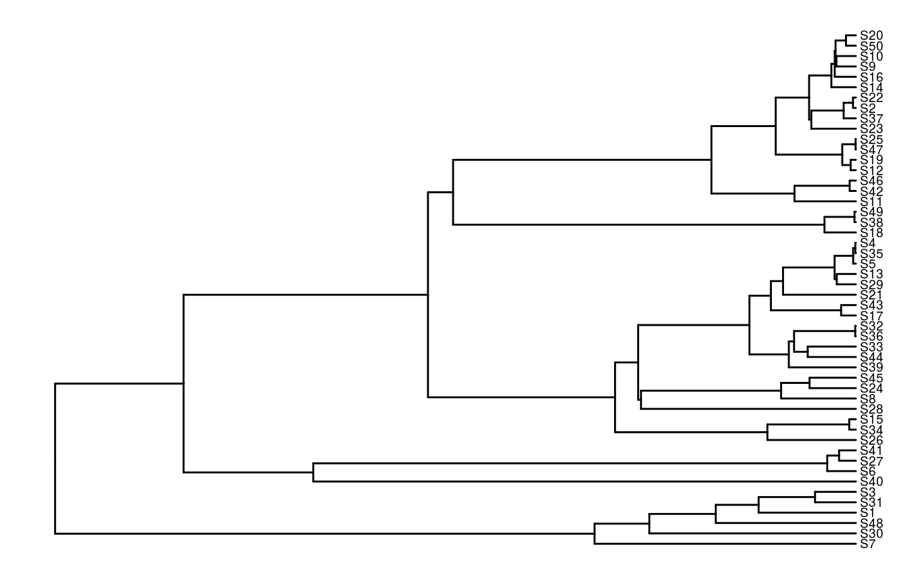
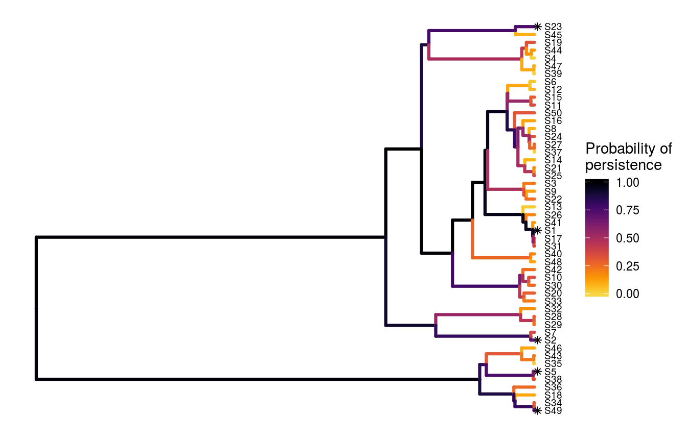

Overview
The optimalppp R package provides methods for prioritizing funding of conservation projects using the ‘Protect Prioritization Protocol’. A range of methods are provided for identifying priority projects for funding. These include exact algorithm solvers which can identify optimal solutions, and also stingy heuristic algorithms that have conventionally been used to identify suboptimal solutions. This package also provides the functionality to visualize how well solutions maintain biodiversity.
Tutorial
Here we will provide a short example showing how the optimalppp R package can be used to prioritize funding for conservation projects. To start off, we will set the seed for the random number generator to ensure you get the same results as shown here, set some default behavior for the R session, load the optimalppp R package, and load the ggtree R package to plot phylogenetic trees. Please note that you will need install the ggtree and treeio package separately from Bioconductor since they are not on the Comprehensive R Archive Network (CRAN; see the ppp_plot help file for installation instructions).
set.seed(500)
options(getClass.msg = FALSE)
library(optimalppp)
library(ggtree)Now we will simulate a data set. This data set will contain conservations projects for 50 species and also phylogenetic data that describe the evolutionary relationships between them. To learn more about what these parameters mean, check out the help page for the ppp_simulate_data function.
# set simulation parameters
number_species <- 50
cost_mean <- 100
cost_sd <- 5
success_min_probability <- 0.7
success_max_probability <- 0.99
funded_min_persistence_probability <- 0.5
funded_max_persistence_probability <- 0.9
not_funded_min_persistence_probability <- 0.01
not_funded_max_persistence_probability <- 0.4
locked_in_proportion <- 0.1
locked_out_proportion <- 0.1
# simulate data
sim <- ppp_simulate_data(number_species,
cost_mean,
cost_sd,
success_min_probability,
success_max_probability,
funded_min_persistence_probability,
funded_max_persistence_probability,
not_funded_min_persistence_probability,
not_funded_max_persistence_probability,
locked_in_proportion,
locked_out_proportion)
# extract conservation project data and phylogenetic data
sim_project_data <- sim$project_data
sim_tree <- sim$treeLet’s visualize the evolutionary relationships between the simulated species.
# plot tree
ggtree(sim_tree) +
geom_tiplab(size = 2.5)
Next, we will load the sim_project_data object. This object stores information about various conservation projects in a tabular format (i.e. tibble). Each row corresponds to a different project, and each column describes various properties associated with the projects. Importantly, the "name" column contains the name of each project, the "cost" column contains the cost of each project, the "success" column denotes the probability of each project succeeding if it is funded, and the "S1"–"S50" columns show the enhanced probability of each species persisting if the project is funded. It also contains additional columns, but we will ignore them for now. Note that the last project—the "baseline_project"—has a zero cost and represents the baseline probability of each species persisting if no other project is funded. Finally, though most projects in this example directly relate to a single species, you can input projects that directly affect the persistence of multiple species.
# print project data
print(sim_project_data)## # A tibble: 51 x 55
## name cost success locked_in locked_out S1 S10 S11 S12 S13
## <chr> <dbl> <dbl> <lgl> <lgl> <dbl> <dbl> <dbl> <dbl> <dbl>
## 1 S1_p… 105. 0.946 TRUE FALSE 0.790 0 0 0 0
## 2 S2_p… 110. 0.732 FALSE FALSE 0 0.665 0 0 0
## 3 S3_p… 104. 0.911 FALSE FALSE 0 0 0.703 0 0
## 4 S4_p… 100. 0.733 FALSE FALSE 0 0 0 0.592 0
## 5 S5_p… 105. 0.986 FALSE FALSE 0 0 0 0 0.560
## 6 S6_p… 97.1 0.960 FALSE FALSE 0 0 0 0 0
## 7 S7_p… 104. 0.777 FALSE FALSE 0 0 0 0 0
## 8 S8_p… 103. 0.822 FALSE FALSE 0 0 0 0 0
## 9 S9_p… 100. 0.950 FALSE TRUE 0 0 0 0 0
## 10 S10_… 101. 0.729 FALSE FALSE 0 0 0 0 0
## S14 S15 S16 S17 S18 S19 S2 S20 S21 S22 S23 S24
## <dbl> <dbl> <dbl> <dbl> <dbl> <dbl> <dbl> <dbl> <dbl> <dbl> <dbl> <dbl>
## 1 0 0 0 0 0 0 0 0 0 0 0 0
## 2 0 0 0 0 0 0 0 0 0 0 0 0
## 3 0 0 0 0 0 0 0 0 0 0 0 0
## 4 0 0 0 0 0 0 0 0 0 0 0 0
## 5 0 0 0 0 0 0 0 0 0 0 0 0
## 6 0.557 0 0 0 0 0 0 0 0 0 0 0
## 7 0 0.851 0 0 0 0 0 0 0 0 0 0
## 8 0 0 0.883 0 0 0 0 0 0 0 0 0
## 9 0 0 0 0.701 0 0 0 0 0 0 0 0
## 10 0 0 0 0 0.767 0 0 0 0 0 0 0
## # ... with 41 more rows, and 33 more variables: S25 <dbl>, S26 <dbl>,
## # S27 <dbl>, S28 <dbl>, S29 <dbl>, S3 <dbl>, S30 <dbl>, S31 <dbl>,
## # S32 <dbl>, S33 <dbl>, S34 <dbl>, S35 <dbl>, S36 <dbl>, S37 <dbl>,
## # S38 <dbl>, S39 <dbl>, S4 <dbl>, S40 <dbl>, S41 <dbl>, S42 <dbl>,
## # S43 <dbl>, S44 <dbl>, S45 <dbl>, S46 <dbl>, S47 <dbl>, S48 <dbl>,
## # S49 <dbl>, S5 <dbl>, S50 <dbl>, S6 <dbl>, S7 <dbl>, S8 <dbl>, S9 <dbl>Let us assume that our resources are limited such that we can only spend, at most, $500 on funding conservation projects. In other words, our budget is capped at $500. Now, given the project data (sim_project_data), the species’ evolutionary relationships (sim_tree), and this budget (500), we can begin prioritizing funding for the conservation projects. Conventionally, conservation projects have been prioritized using heuristic algorithms (e.g. Bennett et al. 2014), so let’s generate our first prioritization using this method.
# prioritize funding using stingy heuristic algorithm
s1 <- ppp_heuristic_solution(x = sim_project_data, tree = sim_tree,
budget = 500, project_column_name = "name",
cost_column_name = "cost",
success_column_name = "success")
# print solution
print(s1)## # A tibble: 1 x 57
## objective budget cost optimal method S1_project S2_project S3_project
## <dbl> <dbl> <dbl> <lgl> <chr> <lgl> <lgl> <lgl>
## 1 4.46 500 403. NA heuri… TRUE FALSE FALSE
## S4_project S5_project S6_project S7_project S8_project S9_project
## <lgl> <lgl> <lgl> <lgl> <lgl> <lgl>
## 1 FALSE FALSE FALSE FALSE FALSE FALSE
## # ... with 43 more variables: S10_project <lgl>, S11_project <lgl>,
## # S12_project <lgl>, S13_project <lgl>, S14_project <lgl>,
## # S15_project <lgl>, S16_project <lgl>, S17_project <lgl>,
## # S18_project <lgl>, S19_project <lgl>, S20_project <lgl>,
## # S21_project <lgl>, S22_project <lgl>, S23_project <lgl>,
## # S24_project <lgl>, S25_project <lgl>, S26_project <lgl>,
## # S27_project <lgl>, S28_project <lgl>, S29_project <lgl>,
## # S30_project <lgl>, S31_project <lgl>, S32_project <lgl>,
## # S33_project <lgl>, S34_project <lgl>, S35_project <lgl>,
## # S36_project <lgl>, S37_project <lgl>, S38_project <lgl>,
## # S39_project <lgl>, S40_project <lgl>, S41_project <lgl>,
## # S42_project <lgl>, S43_project <lgl>, S44_project <lgl>,
## # S45_project <lgl>, S46_project <lgl>, S47_project <lgl>,
## # S48_project <lgl>, S49_project <lgl>, S50_project <lgl>,
## # baseline_project <lgl>, solution <int>The object s1 contains the solution and also various statistics associated with the solution in a tabular format (i.e. tibble). Here, each row corresponds to a different solution. Specifically, the "solution" column contains an identifier for the solution (this is useful for methods that output multiple solutions), the "objective" column contains the objective value (i.e. the expected phylogenetic diversity, Faith 2008), the "budget" column stores the budget used for generating the solution, the "cost" column stores the cost of the solution, the "optimal" column indicates if the solution is known to be optimal (NA values mean the optimality is unknown), and the "method" column contains the name of the method used to generate the solution. The remaining columns ("S1_project", "S2_project", "S3_project", …, "S50_project", and "baseline_project") indicate if a given project was prioritized for funding in the solution or not.
Here, the objective value (in the "objective" column) denotes the amount of evolutionary history that is expected to persist (i.e. 4.463 million years). Put simply, solutions that are expected to result in better conservation outcomes will be associated with a greater objective value. Since tabular data can be difficult to intuit, let’s visualize how well this solution would maintain the different branches in the phylogeny. Note that species which receive any funding are denoted with an asterisk.
# visualize solution
ppp_plot(sim_project_data, sim_tree, s1, project_column_name = "name",
cost_column_name = "cost", success_column_name = "success",
asterisk_hjust = 0.006)
In some cases, we might have projects for iconic species that are socially and economically important for conservation. To ensure that for projects these species are funded–regardless of cost-efficiency or evolutionary benefit—we can “lock in” certain projects into the solution (conversely, we can also “lock out” certain projects if desired). Let us imagine that it is absolutely critical that the project for species S1 (named "S1_project") receive funding. We can then generate another solution using the stingy heuristic algorithm with this constraint.
# set locked in column to only lock in species S3
sim_project_data$locked_in <- sim_project_data$name == "S1_project"
# prioritize funding using stingy heuristic algorithm
s2 <- ppp_heuristic_solution(x = sim_project_data, tree = sim_tree,
budget = 500, project_column_name = "name",
cost_column_name = "cost",
success_column_name = "success",
locked_in_column_name = "locked_in")
# print solution
print(s2)## # A tibble: 1 x 57
## objective budget cost optimal method S1_project S2_project S3_project
## <dbl> <dbl> <dbl> <lgl> <chr> <lgl> <lgl> <lgl>
## 1 4.46 500 403. NA heuri… TRUE FALSE FALSE
## S4_project S5_project S6_project S7_project S8_project S9_project
## <lgl> <lgl> <lgl> <lgl> <lgl> <lgl>
## 1 FALSE FALSE FALSE FALSE FALSE FALSE
## # ... with 43 more variables: S10_project <lgl>, S11_project <lgl>,
## # S12_project <lgl>, S13_project <lgl>, S14_project <lgl>,
## # S15_project <lgl>, S16_project <lgl>, S17_project <lgl>,
## # S18_project <lgl>, S19_project <lgl>, S20_project <lgl>,
## # S21_project <lgl>, S22_project <lgl>, S23_project <lgl>,
## # S24_project <lgl>, S25_project <lgl>, S26_project <lgl>,
## # S27_project <lgl>, S28_project <lgl>, S29_project <lgl>,
## # S30_project <lgl>, S31_project <lgl>, S32_project <lgl>,
## # S33_project <lgl>, S34_project <lgl>, S35_project <lgl>,
## # S36_project <lgl>, S37_project <lgl>, S38_project <lgl>,
## # S39_project <lgl>, S40_project <lgl>, S41_project <lgl>,
## # S42_project <lgl>, S43_project <lgl>, S44_project <lgl>,
## # S45_project <lgl>, S46_project <lgl>, S47_project <lgl>,
## # S48_project <lgl>, S49_project <lgl>, S50_project <lgl>,
## # baseline_project <lgl>, solution <int># visualize solution
ppp_plot(sim_project_data, sim_tree, s2, project_column_name = "name",
cost_column_name = "cost", success_column_name = "success")
Next, we might want to evaluate how well this solution compares to selecting projects at random. To achieve this, we need to generate solutions that contain randomly selected projects that (i) always include the baseline scenario project, and (ii) meet the budget. Fortunately, the ppp_random_solution function does this for us. So, let’s generate 500 random solutions with a budget of $500.
# prioritize funding using stingy heuristic algorithm
s3 <- ppp_random_solution(x = sim_project_data, tree = sim_tree,
budget = 500, project_column_name = "name",
cost_column_name = "cost",
success_column_name = "success",
locked_in_column_name = "locked_in",
number_solutions = 500)
# print solution
print(s3)## # A tibble: 500 x 57
## solution objective budget cost optimal method S1_project S2_project
## <int> <dbl> <dbl> <dbl> <lgl> <chr> <lgl> <lgl>
## 1 1 4.06 500 409. NA random TRUE FALSE
## 2 2 3.97 500 413. NA random TRUE FALSE
## 3 3 4.08 500 500. NA random TRUE FALSE
## 4 4 4.01 500 491. NA random TRUE FALSE
## 5 5 3.98 500 499. NA random TRUE FALSE
## 6 6 4.35 500 496. NA random TRUE FALSE
## 7 7 4.03 500 424. NA random TRUE TRUE
## 8 8 4.05 500 403. NA random TRUE FALSE
## 9 9 3.96 500 399. NA random TRUE FALSE
## 10 10 3.98 500 408. NA random TRUE FALSE
## S3_project S4_project S5_project S6_project S7_project S8_project
## <lgl> <lgl> <lgl> <lgl> <lgl> <lgl>
## 1 FALSE FALSE FALSE FALSE FALSE FALSE
## 2 FALSE FALSE TRUE FALSE FALSE FALSE
## 3 FALSE FALSE FALSE FALSE TRUE FALSE
## 4 FALSE FALSE FALSE FALSE FALSE FALSE
## 5 FALSE TRUE FALSE FALSE FALSE FALSE
## 6 FALSE FALSE FALSE FALSE TRUE FALSE
## 7 FALSE FALSE FALSE FALSE FALSE FALSE
## 8 FALSE FALSE FALSE FALSE FALSE FALSE
## 9 FALSE FALSE FALSE FALSE FALSE FALSE
## 10 TRUE FALSE FALSE FALSE FALSE FALSE
## # ... with 490 more rows, and 43 more variables: S9_project <lgl>,
## # S10_project <lgl>, S11_project <lgl>, S12_project <lgl>,
## # S13_project <lgl>, S14_project <lgl>, S15_project <lgl>,
## # S16_project <lgl>, S17_project <lgl>, S18_project <lgl>,
## # S19_project <lgl>, S20_project <lgl>, S21_project <lgl>,
## # S22_project <lgl>, S23_project <lgl>, S24_project <lgl>,
## # S25_project <lgl>, S26_project <lgl>, S27_project <lgl>,
## # S28_project <lgl>, S29_project <lgl>, S30_project <lgl>,
## # S31_project <lgl>, S32_project <lgl>, S33_project <lgl>,
## # S34_project <lgl>, S35_project <lgl>, S36_project <lgl>,
## # S37_project <lgl>, S38_project <lgl>, S39_project <lgl>,
## # S40_project <lgl>, S41_project <lgl>, S42_project <lgl>,
## # S43_project <lgl>, S44_project <lgl>, S45_project <lgl>,
## # S46_project <lgl>, S47_project <lgl>, S48_project <lgl>,
## # S49_project <lgl>, S50_project <lgl>, baseline_project <lgl># visualize solution
ppp_plot(sim_project_data, sim_tree, s3, project_column_name = "name",
cost_column_name = "cost", success_column_name = "success", n = 2,
asterisk_hjust = 0.006)
We can now calculate how much better the solution generated using the stingy heuristic algorithm performs than random.
# calculate how much better solution performs than random
s2$objective - mean(s3$objective)## [1] 0.3980684Since the stingy heuristic algorithm performs much better than random, you might be thinking that the stingy heuristic algorithm is pretty good. But you would be wrong. This is because the heuristic algorithms provide no guarantees on solution quality relative to optimality. In other words, the objective value tells us how good the solution is, but it does not tell us how good the solution is compared to the best possible solution. Therefore we cannot possibly be confident that the solution is any good at all. Fortunately, we can use exact algorithms to find the optimal solution to this problem (for discussion on exact algorithms in conservation, see Underhill 1994; Rodrigues & Gaston 2002).
# prioritize funding using stingy heuristic algorithm
s4 <- ppp_exact_solution(x = sim_project_data, tree = sim_tree,
budget = 500, project_column_name = "name",
cost_column_name = "cost",
success_column_name = "success",
locked_in_column_name = "locked_in")
# print solution
print(s4)## # A tibble: 1 x 57
## solution objective budget cost optimal method S1_project S2_project
## <int> <dbl> <dbl> <dbl> <lgl> <chr> <lgl> <lgl>
## 1 1 4.55 500 500. TRUE exact TRUE FALSE
## S3_project S4_project S5_project S6_project S7_project S8_project
## <lgl> <lgl> <lgl> <lgl> <lgl> <lgl>
## 1 FALSE FALSE FALSE FALSE FALSE FALSE
## # ... with 43 more variables: S9_project <lgl>, S10_project <lgl>,
## # S11_project <lgl>, S12_project <lgl>, S13_project <lgl>,
## # S14_project <lgl>, S15_project <lgl>, S16_project <lgl>,
## # S17_project <lgl>, S18_project <lgl>, S19_project <lgl>,
## # S20_project <lgl>, S21_project <lgl>, S22_project <lgl>,
## # S23_project <lgl>, S24_project <lgl>, S25_project <lgl>,
## # S26_project <lgl>, S27_project <lgl>, S28_project <lgl>,
## # S29_project <lgl>, S30_project <lgl>, S31_project <lgl>,
## # S32_project <lgl>, S33_project <lgl>, S34_project <lgl>,
## # S35_project <lgl>, S36_project <lgl>, S37_project <lgl>,
## # S38_project <lgl>, S39_project <lgl>, S40_project <lgl>,
## # S41_project <lgl>, S42_project <lgl>, S43_project <lgl>,
## # S44_project <lgl>, S45_project <lgl>, S46_project <lgl>,
## # S47_project <lgl>, S48_project <lgl>, S49_project <lgl>,
## # S50_project <lgl>, baseline_project <lgl># visualize solution
ppp_plot(sim_project_data, sim_tree, s4, project_column_name = "name",
cost_column_name = "cost", success_column_name = "success",
asterisk_hjust = 0.006)
Now that we have the optimal solution (objective value = 4.55 million years of expected evolutionary history), we can see that the solution generated by the stingy heuristic algorithm (objective value = 4.463 million years of expected evolutionary history) was indeed suboptimal.
Citation
This repository is still under active development. It is not yet ready for use.
Please use the following citation to cite the optimalppp R package in publications:
Hanson JO, Schuster R, Strimas-Mackey M, Bennett J, (2018). optimalppp: Optimal Project Prioritization Protocol. R package version 0.0.0.1. Available at https://github.com/prioritizr/optimalppp.